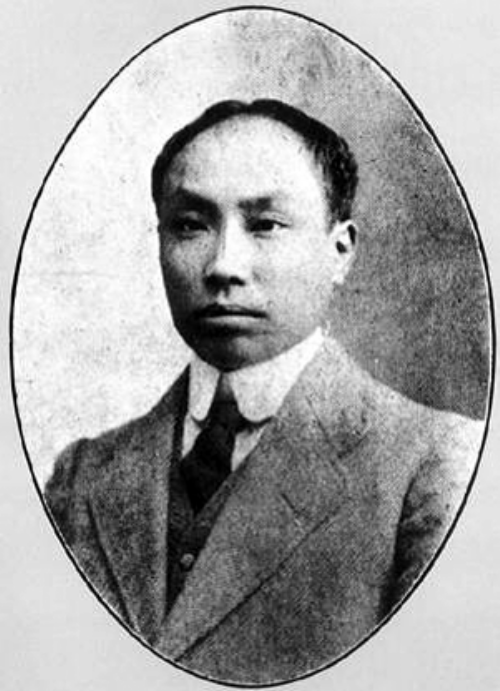

-------------------------------------------------------------------------------------------------------------- produced by Sawatari™ ------------------------------------------------------------------------------------------------------------------

陈独秀（1879-1942），原名庆同，官名乾生，字仲甫，号实庵。中国新文化运动的发起人和旗帜，中国文化启蒙运动的先驱，五四运动的总司令，中国共产主义运动的先行者，中国共产党的创始人及首任总书记，中共一大至五大期间党的最高领袖。
陈独秀1879年10月9日（清光绪五年）出生于安徽省安庆市城北（旧城北门后营，今安庆116医院）的一间小平房里。早年毕业于求是书院（浙江大学前身），1901年留学日本。1903年参加拒俄运动，1905年创建安徽第一个资产阶级革命组织岳王会，任总会长，曾参加反对清王朝和反对袁世凯的斗争。1915年9月创办《青年杂志》（后名《新青年》），以进化论观点和个性解放思想为主要武器，大力提倡新道德、反对旧道德，提倡新文学、反对旧文学，举起民主与科学的旗帜。1916年任北京大学文科学长（北京大学当时有文科、理科、法科，文科是北大三科中最重要的，当时北大不设副校长，在北大，文科学长是仅次于校长的重要职位）。1918年和李大钊创办《每周评论》，提倡新文化，宣传马克思主义，俗称“南陈北李”。是五四新文化运动的主要领导人之一。1920年，在共产国际的帮助下，首先在上海建立中国共产党发起组织，进行建党活动。1921年3月24日，陈独秀受陈炯明之邀在广东建党。1921年7月，在上海举行的中国共产党第一次全国代表大会上，被选为中央局书记，其后被选为第二、第三届中央执行委员会委员长，第四、第五届中央委员会总书记。
在大革命中，多次反对共产国际的国共合作指示（为了保证合作，共产国际要求共产党员留在国民党内），但是由于缺乏系统的、独立的阶级纲领指导，使陈独秀等一次次被共产国际领导层错误的行政指令压下去。最激烈的一次是在1926年中山舰事件后，陈独秀在党报上发表公开信，单方面宣布退出国民党，引起党内外轰动，因为共产党员留在国民党内服从后者的纪律，是共产国际为确保国共合作的既定战略路线的中心政策（共产国际为何执行这一政策的部分原因参见百度百科一国建成社会主义论的词条）。但不久后共产国际领导层发来的指令，使大多数中共党员继续坚持旧政策，而包括陈独秀在内的异议分子无论如何也想不到要与这种路线彻底决裂，另立独立路线的无产阶级政党，因为他们并没有形成完全有别于共产国际的另一种国际国内革命纲领，更不了解当时国际领导层内部托洛茨基一派与斯大林一派正在就同一个中国革命问题进行激烈的纲领斗争。值得一提的是，除了陈独秀等少数共产党人的异议外，其他大多数中共党员都没有对共产国际指令提出哪怕一鳞半爪的反对意见和公开质疑。这就导致了中国共产党员虽然是中国革命的实际领导者，却是为国民党做苦力的政治局面，大革命失败对中国共产党造成了强烈冲击，大批优秀干部（包括陈独秀的两个儿子）在反革命屠杀中丧生，1927年到30年代初的失败浪潮使中共在城市工人中的影响力严重削弱.。在1927年八七会议上，会议认为陈独秀犯了“右倾机会主义”错误，撤销了陈独秀的总书记职务。其后，陈独秀在苦闷中反思，开始接受国际托洛茨基派的观点，要求中共中央接受托派路线，即反对斯大林主义荒唐透顶的左倾暴动路线，同时也反对盲目向农村发展力量甚至把游击队高抬为红军（诚然，不仅陈独秀而且当时相当多数国际国内共产党人都低估了农民运动），而主张以国民会议为中心，主张从民权、民主斗争开始重新聚集力量。1929年11月，因为中东路事件，共产国际远东局从一开始就明确要求中共中央要提出“武装保卫苏联”的口号，并组织大规模的反对国民党和拥护苏联的群众示威。对此，中共中央毫不犹豫地做出了积极的响应。他们召开政治局会议，决定开动一切宣传机器，并在8月1日“反帝日”举行示威，而且争取发动上海工人总罢工。对于中共中央的做法，陈独秀专门致信中共中央提出批评，主张在这个时候片面宣传“拥护苏联”“于我们不利”，绝不能简单地认为“广大群众都认同苏联是中国解放的朋友”（《陈独秀给中共中央的信》，1929年7月28日，8月11日）。为此，并鉴于陈独秀等人事实上根本反对中共中央的政治路线，中共中央很快正式决议将陈独秀等人开除出党（《江苏省委为开除彭述之汪泽凯马玉夫蔡振德及反对党内机会主义与托洛斯基反对派的决议》，1929年10月20日；《中共中央政治局关于开除陈独秀党籍并批准江苏省委开除彭述之汪泽凯马玉夫蔡振德四人决议案》，1929年11月15日；《中共中央文件选集》第5册，第549－555页）。中共中央明确认为，陈独秀等人在中东路问题上的意见，“是党内一些动摇的机会主义分子的立场的最露骨的表现”（《评陈独秀的信件》）。陈独秀被开除出中国共产党。12月，与彭述之等81人发表《我们的政治意见书》，攻击中国共产党的机会主义领导层。同时，在上海建立托派组织“无产者社”，出版《无产者》刊物，宣传托派观点。1932年，陈独秀因发表取消国民党一党专政演说而被国民党政府抓进监狱。直到1937年，中国共产党和全国人民“释放全部政治犯”的要求下，陈独秀被释放出狱来到武汉。在1937年，在上海淞沪会战中，支持抗战，谴责蒋介石卖国独裁，被国民党政府逮捕。1937年8月出狱，拥护国共合作和国民党领导抗日，在武汉联络民主人士和抗日军队，试图组织“不拥国、不阿共”的第三势力。此时的陈独秀已偏离了托派纲领，并遭到多数中国托派的反对，但仍与托派组织保持关系直至逝世也未曾脱离过这种组织和思想、政治关系。1938年，被王明、康生诬陷为日本间谍，从此与中共彻底决裂。晚年陈独秀最终的立场是要求建立民主的政权，开始对共产主义理论进行反思。抗日战争期间，陈独秀在晚年出版了几册为抗战呼喊的呐喊集，分别是1938年4月由广州亚东图书馆出版的《我对于抗战的意见》和《从国际形势观察中国抗战前途》，1938年8月广州亚东图书馆出版印行的《我们断然有救》，以及1938年11月出版的《告日本社会主义者》。1942年5月27日，陈独秀作为二十多年来一直为无产阶级解放事业而奋斗的革命战士于四川江津病逝。主要著作收入《独秀文存》、《陈独秀文章选编》等。